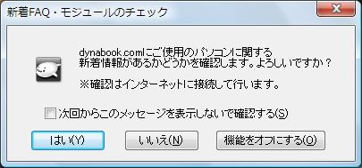

新着情報チェック機能を使う場合、「新着FAQ・モジュールを確認する」のチェックボックスをｏｎ(有効）にしてください。
ぱらちゃんが通知メッセージをしゃべっているときにクリックして、新着情報を表示させます。
確認はインターネットに接続して行います。接続は１日に一度行われます。
【新着情報】
●確認メッセージを表示する
チェックしておくことでインターネットの接続前に確認ダイアログを表示させることができます。

【表示する情報】
FAQやモジュールのリストを表示する際に、すべて表示するか前回リストを参照したときからのアップデート分のみを表示するか選択します。
●今すぐ表示する ボタン
インターネットに接続し、お使いのＰＣに関するFAQや、新着モジュールの表示を行うことができます。
|
|